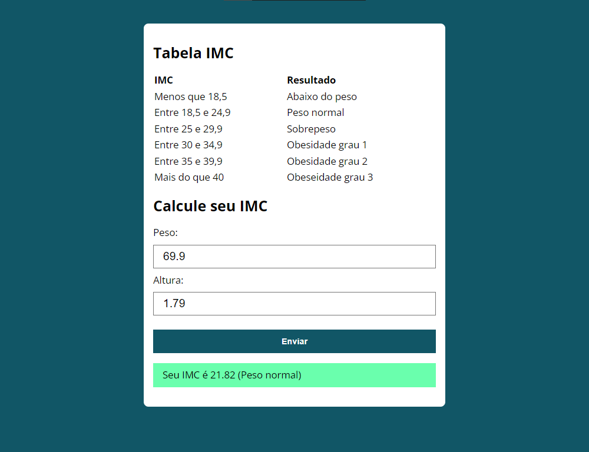

Olá!
Eu me chamo Lucas Gabriel Von Ryn e sou do Brasil.
Eu amo programar, como também adoro correr, tirar boas fotos e aprender novas coisas!
Sinta-se à vontade para entrar em contato ou dar uma olhada em meus trabalhos anteriores abaixo.
Portfólio
Meus melhores projetos
Calculadora de IMC
Calculadora simples de índice de massa corporal feita em JavaScript, também usando HTML e CSS.
Acesse este projeto aqui
